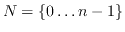
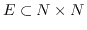

The Eco Lab graph library is a library providing a simple and lightweight structure for representing graphs (aka networks). A graph consists of a set of nodes labelled , and a set of edges , which have an optional weight factor attached.
struct Edge: public std::pair<unsigned,unsigned>
{
unsigned source();
unsigned target();
float weight;
};
The abstract Graph interface has the following definition:
struct Graph
{
struct const_iterator
{
Edge operator*() const;
const Edge* operator->() const;
const_iterator& operator++();
bool operator==(const const_iterator& x) const;
bool operator!=(const const_iterator& x) const;
};
virtual const_iterator begin() const;
virtual const_iterator end() const;
virtual unsigned nodes() const;
virtual unsigned links() const;
virtual void push_back(const Edge& e);
virtual bool contains(const Edge& e) const;
virtual bool directed() const;
virtual void clear(unsigned nodes=0);
const Graph& operator=(const Graph& x);
void input(const std::string& format, const std::string& filename);
void output(const std::string& format, const std::string& filename) const;
template <class BG> Graph_back_insert_iterator<Graph,BG>
back_inserter(const BG& bg);
}
The begin/end methods allow one to iterate over the edges. Only a const_iterator
is supplied, as it is an error to change the value of an edge. One can
only reset a graph to the empty graph via clear, and construct the
graph incrementally using the push_back() method.
The contains method allows one to test whether a given edge is
in the graph, and directed indicates whether the underlying graph
structure has directed edges or not. A bidirectional graph otherwise
appears as a directed graph where each edge appears twice, once for
each direction.
The input/output methods allow for the graph to be read/written from/to a file, in a variety of formats, given by the format parameter. Currently, the following formats are supported:
| name | description |
| pajek | Pajek's .net format |
| lgl | LGL's .lgl format |
| dot | Graphviz format |
| gengraph | Gengraph |
models/netcomplexity_scripts directory.
back_inserter creates an output iterator suitable for use with
Boost Graph algorithms. As a simple example, to construct an Eco Lab
graph from a Boost Graph, do
std::pair<BG::edge_iterator,BG::edge_iterator> r=edges(bg); ConcreteGraph<DiGraph> g1; copy(r.first, r.second, g1.back_inserter(bg));
This interface can be used in both a dynamic polymorphism fashion (ie Graph is an abstract base class) and in a static polymorphism fashion.
The graph.h header file provides two concrete graph types -
DiGraph and BiDirectionalGraph, which differ just in whether each edge
is directed or not.